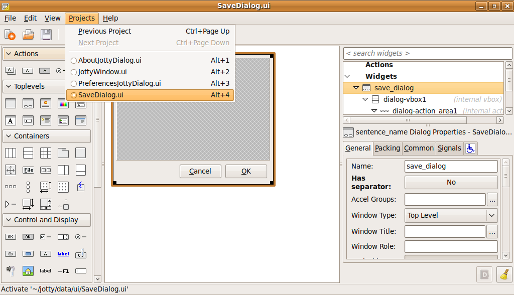
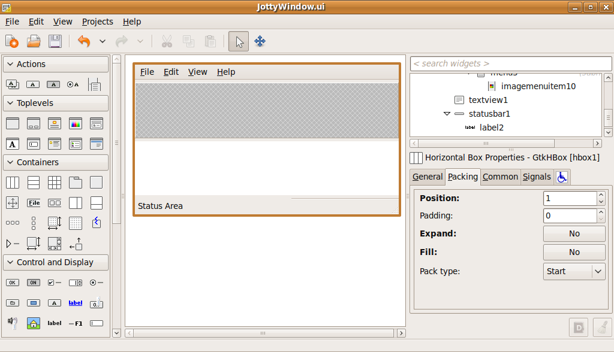
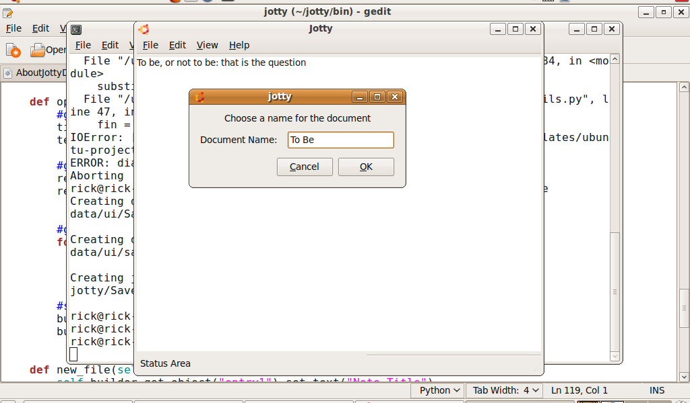
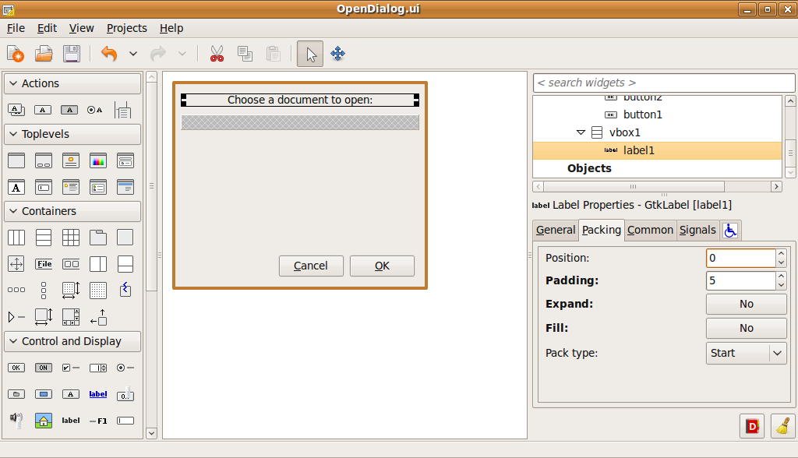
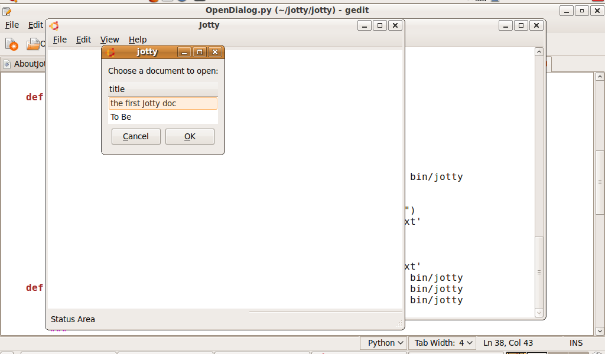

In part 1, we created an application that can read and write text files, and persist them in the couchdb backend. However, the application has a hideous usability flaw, in the text box for specifying titles when saving and opening files is very confusing. In part 2, we'll fix thay by adding a save and an open dialog.
It's simple to add an empty, but working dialog to your project. Simply specify the name of the new dialog, and it will be added automatically. Assuming that you are in the jotty project directory:
This will add the dialog to your project.
To edit the UI for the dialog, you'll need to load it into Glade again. If you already have an instance of glade running, you might want to go ahead and close it first, as it may get confusing if you have more than one open at a time. After closing glade, simply open it again:
Then use the project menu to switch to newly created SaveDialog.ui file.
Then add some widgets for the UI. Start with a Vertical Box (VBox) with two items. Put label in the top, and an HBox in the bottom slot. In the HBox, add a label and an edit widget, just like you did for JottyWindow in part 1. Set the padding and expand properties as well.
You can use the "quickly edit" command to open the SaveDialoy.py file. This dialog needs very little additional code to work. Essentially, you just need a way to retrieve the string specified by the user. We'll add a qiuck accessor method for this:
We don't need to write any code for the Ok and Cancel buttons, as they were automatically hooked up by quickly when it created the dialog.
Before we go on to invoking the dialog, delete HBox from JottyWindow that holds the text entry and label, as we won't be needing those.
To use the dialog in JottyWindow, we need to follow these steps:
When the user chooses Save, we want to open the SaveDialog and collect the title of the note from the user. So we need to modify our save_file function.
To create an instance of the dialog, use the NewSaveDialog() function in the SaveDialog module. It's important that you don't create an instance of SaveDialog directly, as it won't have a chance to load up it's UI that way, and it won't work. So whenever you use a quickly dialog, do it like this:
To make the dialog appear, simply use the run() method. However, we want to check the result, so we'll need to store that in a variable. After it runs, we want to collect the string from the user, like this:
We need to tell the dialog to not show itself anymore. We could call saver.hide() to make it hide, but since we don't need it hanging around, we'll just destroy it. Before we go on, though, we need to ensure that the user actually wants to save, so if we didn't get the Ok result, we should just return out of the function:
Since we're now getting the title from the dialog instead of the text entry, we should delete the line of the code that sents it from entry1. So except for the addition of the dialog code, the save_file function looks pretty much the same as it did in part 1:
Now when we choose save, we get the SaveDialog instead: We'll use a similar approach in the Open dialog that we did with Save. However, there is one big difference, we want to provide the user with a list of documents that you could choose to open. We'll use a widget called CouchGrid, which is included in the desktopcouch api for this.
Start out by closing, and then reopening glade again:
Start by adding an HBox and label in the sammer manner as in the Save Dialog above. Leave an empty space in the HBox. We will use code to put the CouchGrid there.
It just takes a little bit of code to add a CouchGrid to the dialog. We need to:
CouchGrid is part of the desktopcouch records api, so we import it like this:
A CouchGrid needs to know three things, the name of the database, the name of the record type to, and the name of the keys to use. "keys" is a list of fields that the widget will display, and by default will also use the same text for the heading of any columns. This set up should be done in the OpenDialog's finish_initalizing function. All this is easily done in code like this:
When we added the HBox to the dialog, we left an open space at the bottom. We'll use this by "packing" the CouchGrid into the HBox. We need to show it as well. So add the following lines to the finish_initializing function as well:
The dialog still needs a bit more code to work. It needs to return the user's selection, if there is one. To do this, we need to ask the CouchGrid what is selected. This is easy using the widgets selected_record_ids function. But the CouchGrid supports multiple selection, so we'll do the following:
So the function to add to OpenDialog looks like this:
Now we want to use the Open Dialog in the JottyWindow open_file function. To use it,we'll follow these steps:
Just like the SaveDialog, add the import line to the list of imports:
So now we're ready to call the dialog from the JottyWindow's open_file function. Creating the OpenDialog is exactly the same as creating the SaveDialog, except we also want to tell it to load the titles before we run it:
Now use the get_selection function to retrieve the title and text from the dialog. Don't forget to check the response type before going on.
This merely involves using the property that we created for th OpenDialog:
If nothing was selected, we'll just return. Otherwise, we'll retrieve the record from CouchDB and pull out the text for the document:
Now just put the text into the texview:
That's all there is to it. So the whole open_file function looks like this:
Now users get a nice open dialog:
Now opening a saved document is much more intuitive.

However, the application is not complete. There are a few things left for you to do: